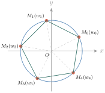
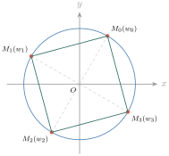

- គណនាស្វ័យគុណទី \(\displaystyle n\) និងឫសទី \(\displaystyle n\) នៃចំនួនកុំផ្លិច
- អនុវត្តក្នុងត្រីកោណមាត្រ ។
1. ស្វ័យគុណទី n នៃចំនួនកុំផ្លិច
គេមានចំនួនកុំផ្លិច \(\displaystyle z = r(\cos\varphi + i\sin\varphi)\) ។ ដោយអនុវត្តតាមរូបមន្ត \(\displaystyle z_1 z_2 = r_1 r_2[\cos(\varphi_1 + \varphi_2) + i\sin(\varphi_1 + \varphi_2)]\) គេបាន
៖ បើ \(\displaystyle z = r(\cos\varphi + i\sin\varphi)\) នោះ \(\displaystyle z^n = [r(\cos\varphi + i\sin\varphi)]^n = r^n(\cos n\varphi + i\sin n\varphi)\) ចំពោះគ្រប់ \(\displaystyle n\) ជាចំនួនគត់វិជ្ជមាន ។ គេអាចទាញបាន
ហៅថា រូបមន្តដឺម័រ (de Moivre) ។
ឧទាហរណ៍ 1 : គេមានចំនួនកុំផ្លិច \(\displaystyle z = 2\left(\cos\dfrac{\pi}{3} + i\sin\dfrac{\pi}{3}\right)\) ។ គណនា \(\displaystyle z^3\) ។
\(\displaystyle z^3 = \left[2\left(\cos\dfrac{\pi}{3} + i\sin\dfrac{\pi}{3}\right)\right]^3 = 2^3\left[\cos\left(\dfrac{\pi}{3} \times 3\right) + i\sin\left(\dfrac{\pi}{3} \times 3\right)\right] = 8(\cos\pi + i\sin\pi)\) ។ ដូច្នេះ \(\displaystyle z^3 = 8(\cos\pi + i\sin\pi) = -8\) ។
ឧទាហរណ៍ 2 : គណនា \(\displaystyle (-1 + i)^{10}\) ។
តាង \(\displaystyle z = -1 + i\) ដែល \(\displaystyle a = -1\) និង \(\displaystyle b = 1\) ។ គេបាន \(\displaystyle r = \sqrt{a^2 + b^2} = \sqrt{(-1)^2 + 1^2} = \sqrt{2}\) ។ ដោយ \(\displaystyle \cos\varphi = \dfrac{a}{r} = -\dfrac{\sqrt{2}}{2}\) និង \(\displaystyle \sin\varphi = \dfrac{b}{r} = \dfrac{\sqrt{2}}{2}\) ដូច្នេះ \(\displaystyle \varphi = \dfrac{3\pi}{4}\) ។ គេបាន \(\displaystyle z = \sqrt{2}\left(\cos\dfrac{3\pi}{4} + i\sin\dfrac{3\pi}{4}\right)\) ។
ដូច្នេះ \(\displaystyle (-1 + i)^{10} = -32i\) ។
សរសេរចំនួនកុំផ្លិច \(\displaystyle (-\sqrt{3} + i)^{13}\) ជាទម្រង់ពីជគណិត \(\displaystyle a + bi\) ។
ដំបូងត្រូវបំប្លែងចំនួនខាងលើ ជាទម្រង់ត្រីកោណមាត្រ ។ គេមាន \(\displaystyle -\sqrt{3} + i\) ដែល \(\displaystyle a = -\sqrt{3}\) និង \(\displaystyle b = 1\) ។ គេបាន \(\displaystyle r = \sqrt{(-\sqrt{3})^2 + 1^2} = 2\) ។ ដោយ \(\displaystyle \cos\varphi = -\dfrac{\sqrt{3}}{2}\) និង \(\displaystyle \sin\varphi = \dfrac{1}{2}\) ដូច្នេះ \(\displaystyle \varphi = \dfrac{5\pi}{6}\) ។ គេបាន \(\displaystyle -\sqrt{3} + i = 2\left(\cos\dfrac{5\pi}{6} + i\sin\dfrac{5\pi}{6}\right)\) ។
ដូច្នេះ \(\displaystyle (-\sqrt{3} + i)^{13} = -2^{12}\sqrt{3} + i\,2^{12}\) ។
គណនា \(\displaystyle z = \left(\dfrac{1 + i}{1 - i}\right)^{2n}\) ដែល \(\displaystyle n\) ជាចំនួនគត់វិជ្ជមាន ។
គេបាន \(\displaystyle \dfrac{1 + i}{1 - i} = \dfrac{(1 + i)(1 + i)}{(1 - i)(1 + i)} = \dfrac{1 + 2i - 1}{1 + 1} = i\) ។
សរសេរចំនួនកុំផ្លិច \(\displaystyle i\) ជាទម្រង់ត្រីកោណមាត្រ ៖ \(\displaystyle i\) មាន \(\displaystyle a = 0\) និង \(\displaystyle b = 1\) គេបាន \(\displaystyle r = 1\) ហើយ \(\displaystyle \cos\varphi = 0\), \(\displaystyle \sin\varphi = 1\) ដូច្នេះ \(\displaystyle \varphi = \dfrac{\pi}{2}\) ។ \(\displaystyle i = \cos\dfrac{\pi}{2} + i\sin\dfrac{\pi}{2}\) ។
ដូច្នេះ \(\displaystyle z = (-1)^n\) ។ បើ \(\displaystyle n\) គូ នោះ \(\displaystyle z = 1\) ហើយបើ \(\displaystyle n\) សេស នោះ \(\displaystyle z = -1\) ។
សង្កេត ៖ គេបានចម្លើយយ៉ាងងាយដោយមិនប្រើទម្រង់ត្រីកោណមាត្រ \(\displaystyle \left(\dfrac{1 + i}{1 - i}\right)^{2n} = i^{2n} = (i^2)^n = (-1)^n\) ។
ស្រាយបញ្ជាក់សមភាពខាងក្រោម ៖
ដោយ \(\displaystyle \sin\varphi = \cos\left(\dfrac{\pi}{2} - \varphi\right)\) និង \(\displaystyle \cos\varphi = \sin\left(\dfrac{\pi}{2} - \varphi\right)\) គេបាន \(\displaystyle \dfrac{1 + \sin\varphi + i\cos\varphi}{1 + \sin\varphi - i\cos\varphi} = \cos\left(\dfrac{\pi}{2} - \varphi\right) + i\sin\left(\dfrac{\pi}{2} - \varphi\right)\) ។
តាមរូបមន្តដឺម័រ \(\displaystyle \left(\dfrac{1 + \sin\varphi + i\cos\varphi}{1 + \sin\varphi - i\cos\varphi}\right)^n = \left[\cos\left(\dfrac{\pi}{2} - \varphi\right) + i\sin\left(\dfrac{\pi}{2} - \varphi\right)\right]^n = \cos\left[n\left(\dfrac{\pi}{2} - \varphi\right)\right] + i\sin\left[n\left(\dfrac{\pi}{2} - \varphi\right)\right]\) ។ ដូច្នេះសមភាពត្រូវបានស្រាយបញ្ជាក់ ។
គណនា \(\displaystyle (1 + i)^{60}\) ។
មើលចម្លើយ
\(\displaystyle 1 + i = \sqrt{2}\left(\cos\dfrac{\pi}{4} + i\sin\dfrac{\pi}{4}\right)\) ។ \(\displaystyle (1 + i)^{60} = (\sqrt{2})^{60}\left(\cos 15\pi + i\sin 15\pi\right) = 2^{30}(\cos\pi + i\sin\pi) = -2^{30}\) ។
សរសេរ \(\displaystyle z\) ជាទម្រង់ \(\displaystyle a + bi\) បើគេឱ្យ \(\displaystyle z = \left(-\dfrac{\sqrt{3}}{2} + i\dfrac{1}{2}\right)^{13}\) ។
មើលចម្លើយ
\(\displaystyle -\dfrac{\sqrt{3}}{2} + \dfrac{1}{2}i = \cos\dfrac{5\pi}{6} + i\sin\dfrac{5\pi}{6}\) (ម៉ូឌុល \(\displaystyle 1\)) ។ \(\displaystyle z = \cos\dfrac{65\pi}{6} + i\sin\dfrac{65\pi}{6} = \cos\left(10\pi + \dfrac{5\pi}{6}\right) + i\sin\left(10\pi + \dfrac{5\pi}{6}\right)\) ។ ដូច្នេះ \(\displaystyle z = -\dfrac{\sqrt{3}}{2} + i\dfrac{1}{2}\) ។
2. អនុវត្តន៍ក្នុងត្រីកោណមាត្រ
គេអាចគណនា \(\displaystyle (\cos\varphi + i\sin\varphi)^n\) តាមរបៀបពីរយ៉ាង ៖
- តាមស្វ័យគុណនៃផលបូកទ្វេធាតុ
- តាមស្វ័យគុណនៃចំនួនកុំផ្លិច ។
ឧទាហរណ៍ : គណនា \(\displaystyle (\cos\varphi + i\sin\varphi)^n\) ។
ករណី \(\displaystyle n = 2\) ៖ តាមស្វ័យគុណនៃផលបូកទ្វេធាតុ \(\displaystyle (\cos\varphi + i\sin\varphi)^2 = \cos^2\varphi + 2i\cos\varphi\sin\varphi + i^2\sin^2\varphi = \cos^2\varphi - \sin^2\varphi + i(2\cos\varphi\sin\varphi)\) ។ តាមស្វ័យគុណនៃចំនួនកុំផ្លិច \(\displaystyle (\cos\varphi + i\sin\varphi)^2 = \cos 2\varphi + i\sin 2\varphi\) ។
ផ្ទឹមលទ្ធផលទាំង 2 យើងទាញបាន \(\displaystyle \cos 2\varphi = \cos^2\varphi - \sin^2\varphi\) និង \(\displaystyle \sin 2\varphi = 2\sin\varphi\cos\varphi\) គឺជារូបមន្តត្រីកោណមាត្រដែលបានស្រាយបញ្ជាក់រួចហើយ ។
ករណី \(\displaystyle n = 3\) ៖ តាមស្វ័យគុណនៃផលបូកទ្វេធាតុ
តាមស្វ័យគុណនៃចំនួនកុំផ្លិច \(\displaystyle (\cos\varphi + i\sin\varphi)^3 = \cos 3\varphi + i\sin 3\varphi\) ។ យើងទាញបាន
ករណី \(\displaystyle n = 4\) ៖ តាមស្វ័យគុណនៃផលបូកទ្វេធាតុ
តាមស្វ័យគុណនៃចំនួនកុំផ្លិច \(\displaystyle (\cos\varphi + i\sin\varphi)^4 = \cos 4\varphi + i\sin 4\varphi\) ។ យើងទាញបាន
3. ឫសទី n នៃចំនួនកុំផ្លិច
បើ \(\displaystyle w\) ជាឫសទី \(\displaystyle n\) នៃចំនួនកុំផ្លិច \(\displaystyle z\) នោះគេបាន \(\displaystyle w^n = z\) ។ ឧបមាថាទម្រង់ត្រីកោណមាត្រនៃចំនួនកុំផ្លិច \(\displaystyle z\) និង \(\displaystyle w\) គឺ \(\displaystyle z = r(\cos\varphi + i\sin\varphi)\) និង \(\displaystyle w = s(\cos\alpha + i\sin\alpha)\) ។ គេបាន \(\displaystyle w^n = [s(\cos\alpha + i\sin\alpha)]^n = s^n(\cos n\alpha + i\sin n\alpha)\) ។
ដោយ \(\displaystyle w^n = z\) គេបាន \(\displaystyle s^n(\cos n\alpha + i\sin n\alpha) = r(\cos\varphi + i\sin\varphi)\) ។ ចំនួនកុំផ្លិចពីរស្មើគ្នា ម៉ូឌុលរបស់វាក៏ស្មើដែរ ។ គេទាញបាន \(\displaystyle s^n = r\) ដោយ \(\displaystyle s > 0\) និង \(\displaystyle r > 0\) នោះ \(\displaystyle s = \sqrt[n]{r}\) ។ ហើយ \(\displaystyle \cos n\alpha + i\sin n\alpha = \cos\varphi + i\sin\varphi\) គេទាញបាន \(\displaystyle n\alpha = \varphi + 2k\pi\) គឺ \(\displaystyle \alpha = \dfrac{\varphi + 2k\pi}{n}\) ដែល \(\displaystyle k \in \mathbb{Z}\) ។
ជំនួស \(\displaystyle \alpha = \dfrac{\varphi + 2k\pi}{n}\) និង \(\displaystyle s = \sqrt[n]{r}\) ក្នុងទម្រង់ត្រីកោណមាត្រនៃចំនួនកុំផ្លិច \(\displaystyle w\) គេបាន
បើគេជំនួស \(\displaystyle k = 0, 1, 2, 3, \dots, n - 1\) គេបាន \(\displaystyle n\) ឫសទី \(\displaystyle n\) ផ្សេងៗគ្នានៃចំនួនកុំផ្លិច \(\displaystyle z\) ។
៖ បើ \(\displaystyle z = r(\cos\varphi + i\sin\varphi)\) ជាចំនួនកុំផ្លិចមិនសូន្យ ហើយ \(\displaystyle n\) ជាចំនួនគត់វិជ្ជមាន នោះ \(\displaystyle z\) មាន \(\displaystyle n\) ឫសទី \(\displaystyle n\) កំណត់ដោយ
ឧទាហរណ៍ 1 : គណនាឫសទី 5 នៃចំនួនកុំផ្លិច \(\displaystyle -1 + i\) រួចតាងចំណុចរូបភាពនៃឫសទាំងនោះលើរង្វង់ ។
តាង \(\displaystyle z = -1 + i\) ដែល \(\displaystyle a = -1\) និង \(\displaystyle b = 1\) ។ គេបាន \(\displaystyle r = \sqrt{2}\) ; \(\displaystyle \cos\varphi = -\dfrac{\sqrt{2}}{2}\) និង \(\displaystyle \sin\varphi = \dfrac{\sqrt{2}}{2}\) ដូច្នេះ \(\displaystyle \varphi = \dfrac{3\pi}{4}\) ។ គេបាន \(\displaystyle z = -1 + i = \sqrt{2}\left(\cos\dfrac{3\pi}{4} + i\sin\dfrac{3\pi}{4}\right)\) ។
ឫសទី 5 នៃ \(\displaystyle z\) កំណត់ដោយ
ដែល \(\displaystyle k = 0, 1, 2, 3, 4\) ។
- បើ \(\displaystyle k = 0\) នោះ \(\displaystyle w_0 = 2^{\frac{1}{10}}\left[\cos\dfrac{3\pi}{20} + i\sin\dfrac{3\pi}{20}\right]\)
- បើ \(\displaystyle k = 1\) នោះ \(\displaystyle w_1 = 2^{\frac{1}{10}}\left[\cos\dfrac{11\pi}{20} + i\sin\dfrac{11\pi}{20}\right]\)
- បើ \(\displaystyle k = 2\) នោះ \(\displaystyle w_2 = 2^{\frac{1}{10}}\left[\cos\dfrac{19\pi}{20} + i\sin\dfrac{19\pi}{20}\right]\)
- បើ \(\displaystyle k = 3\) នោះ \(\displaystyle w_3 = 2^{\frac{1}{10}}\left[\cos\dfrac{27\pi}{20} + i\sin\dfrac{27\pi}{20}\right]\)
- បើ \(\displaystyle k = 4\) នោះ \(\displaystyle w_4 = 2^{\frac{1}{10}}\left[\cos\dfrac{35\pi}{20} + i\sin\dfrac{35\pi}{20}\right]\) ។

ចំណុច \(\displaystyle M_0, M_1, M_2, M_3, M_4\) តាង \(\displaystyle w_0, w_1, w_2, w_3, w_4\) ជាកំពូលនៃបញ្ចកោណនិយ័ត ។
ឧទាហរណ៍ 2 : គណនាឫសទី 4 នៃចំនួនកុំផ្លិច \(\displaystyle -8 - i8\sqrt{3}\) រួចតាងឫសទាំងនោះលើរង្វង់ ។
តាង \(\displaystyle z = -8 - i8\sqrt{3}\) ដែល \(\displaystyle a = -8\) និង \(\displaystyle b = -8\sqrt{3}\) ។ គេបាន \(\displaystyle r = \sqrt{(-8)^2 + (-8\sqrt{3})^2} = 16\) ។ ដោយ \(\displaystyle \cos\varphi = -\dfrac{8}{16} = -\dfrac{1}{2}\) និង \(\displaystyle \sin\varphi = \dfrac{-8\sqrt{3}}{16} = -\dfrac{\sqrt{3}}{2}\) ដូច្នេះ \(\displaystyle \varphi = \dfrac{4\pi}{3}\) ។ គេបាន \(\displaystyle z = 16\left(\cos\dfrac{4\pi}{3} + i\sin\dfrac{4\pi}{3}\right)\) ។
ឫសទី 4 នៃ \(\displaystyle z\) កំណត់ដោយ
ដែល \(\displaystyle k = 0, 1, 2, 3\) ។
- បើ \(\displaystyle k = 0\) នោះ \(\displaystyle w_0 = 2\left(\cos\dfrac{\pi}{3} + i\sin\dfrac{\pi}{3}\right) = 1 + i\sqrt{3}\)
- បើ \(\displaystyle k = 1\) នោះ \(\displaystyle w_1 = 2\left(\cos\dfrac{5\pi}{6} + i\sin\dfrac{5\pi}{6}\right) = -\sqrt{3} + i\)
- បើ \(\displaystyle k = 2\) នោះ \(\displaystyle w_2 = 2\left(\cos\dfrac{4\pi}{3} + i\sin\dfrac{4\pi}{3}\right) = -1 - i\sqrt{3}\)
- បើ \(\displaystyle k = 3\) នោះ \(\displaystyle w_3 = 2\left(\cos\dfrac{11\pi}{6} + i\sin\dfrac{11\pi}{6}\right) = \sqrt{3} - i\) ។

ចំណុច \(\displaystyle M_0, M_1, M_2, M_3\) តាង \(\displaystyle w_0, w_1, w_2, w_3\) ជាកំពូលនៃការេ ។
ដោះស្រាយសមីការ \(\displaystyle z^6 + 64 = 0\) ។
\(\displaystyle z^6 = -64\) ដូច្នេះ \(\displaystyle z\) ជាឫសទី 6 នៃ \(\displaystyle -64\) ។ \(\displaystyle -64 = -64 + 0i\) មានម៉ូឌុល \(\displaystyle r = 64\) ។ ដោយ \(\displaystyle \cos\varphi = -1\) និង \(\displaystyle \sin\varphi = 0\) ដូច្នេះ \(\displaystyle \varphi = \pi\) ។ គេបាន \(\displaystyle -64 = 64(\cos\pi + i\sin\pi)\) ។ ឫសទី 6 នៃ \(\displaystyle -64\) កំណត់ដោយ
- \(\displaystyle k = 0\) : \(\displaystyle w_0 = 2\left(\cos\dfrac{\pi}{6} + i\sin\dfrac{\pi}{6}\right) = \sqrt{3} + i\)
- \(\displaystyle k = 1\) : \(\displaystyle w_1 = 2\left(\cos\dfrac{\pi}{2} + i\sin\dfrac{\pi}{2}\right) = 2i\)
- \(\displaystyle k = 2\) : \(\displaystyle w_2 = 2\left(\cos\dfrac{5\pi}{6} + i\sin\dfrac{5\pi}{6}\right) = -\sqrt{3} + i\)
- \(\displaystyle k = 3\) : \(\displaystyle w_3 = 2\left(\cos\dfrac{7\pi}{6} + i\sin\dfrac{7\pi}{6}\right) = -\sqrt{3} - i\)
- \(\displaystyle k = 4\) : \(\displaystyle w_4 = 2\left(\cos\dfrac{3\pi}{2} + i\sin\dfrac{3\pi}{2}\right) = -2i\)
- \(\displaystyle k = 5\) : \(\displaystyle w_5 = 2\left(\cos\dfrac{11\pi}{6} + i\sin\dfrac{11\pi}{6}\right) = \sqrt{3} - i\) ។
ដូច្នេះ \(\displaystyle z\) ស្មើនឹង \(\displaystyle \sqrt{3} + i\), \(\displaystyle 2i\), \(\displaystyle -\sqrt{3} + i\), \(\displaystyle -\sqrt{3} - i\), \(\displaystyle -2i\) និង \(\displaystyle \sqrt{3} - i\) ។
ដោះស្រាយសមីការ \(\displaystyle (z - 2)^3 = 1\) ។
\(\displaystyle (z - 2)^3 = 1\) ដូច្នេះ \(\displaystyle z - 2\) ជាឫសគូបនៃ \(\displaystyle 1\) ។ \(\displaystyle 1 = 1 + 0i\) មានម៉ូឌុល \(\displaystyle r = 1\) ; \(\displaystyle \cos\varphi = 1\) និង \(\displaystyle \sin\varphi = 0\) ដូច្នេះ \(\displaystyle \varphi = 0\) ។ គេបាន \(\displaystyle 1 = \cos 0 + i\sin 0\) ។ ឫសទី 3 នៃ \(\displaystyle 1\) កំណត់ដោយ \(\displaystyle w_k = \cos\dfrac{2k\pi}{3} + i\sin\dfrac{2k\pi}{3}\) ដែល \(\displaystyle k = 0, 1, 2\) ។
- \(\displaystyle k = 0\) : \(\displaystyle w_0 = 1\)
- \(\displaystyle k = 1\) : \(\displaystyle w_1 = \cos\dfrac{2\pi}{3} + i\sin\dfrac{2\pi}{3} = -\dfrac{1}{2} + \dfrac{\sqrt{3}}{2}i\)
- \(\displaystyle k = 2\) : \(\displaystyle w_2 = \cos\dfrac{4\pi}{3} + i\sin\dfrac{4\pi}{3} = -\dfrac{1}{2} - \dfrac{\sqrt{3}}{2}i\) ។
ដោយ \(\displaystyle z - 2 = \sqrt[3]{1}\) គឺ \(\displaystyle z = \sqrt[3]{1} + 2\) ។ បើ \(\displaystyle w_0 = 1\) នោះ \(\displaystyle z_0 = 3\) ; បើ \(\displaystyle w_1 = -\dfrac{1}{2} + \dfrac{\sqrt{3}}{2}i\) នោះ \(\displaystyle z_1 = \dfrac{3}{2} + \dfrac{\sqrt{3}}{2}i\) ; បើ \(\displaystyle w_2 = -\dfrac{1}{2} - \dfrac{\sqrt{3}}{2}i\) នោះ \(\displaystyle z_2 = \dfrac{3}{2} - \dfrac{\sqrt{3}}{2}i\) ។
ដូច្នេះ ឫសនៃសមីការមាន \(\displaystyle z_0 = 3\), \(\displaystyle z_1 = \dfrac{3}{2} + \dfrac{\sqrt{3}}{2}i\) និង \(\displaystyle z_2 = \dfrac{3}{2} - \dfrac{\sqrt{3}}{2}i\) ។
ដោះស្រាយសមីការ \(\displaystyle z^6 + 2z^3 + 1 = 0\) ។
\(\displaystyle z^6 + 2z^3 + 1 = (z^3 + 1)^2\) ។ គេបាន \(\displaystyle (z^3 + 1)^2 = 0\) នាំឱ្យ \(\displaystyle z^3 = -1\) ឬ \(\displaystyle z\) ជាឫសគូបនៃ \(\displaystyle -1\) ។ តែ \(\displaystyle -1 = -1 + 0i\) មាន \(\displaystyle r = 1\) ; \(\displaystyle \cos\varphi = -1\) និង \(\displaystyle \sin\varphi = 0\) ដូច្នេះ \(\displaystyle \varphi = \pi\) គេបាន \(\displaystyle -1 = \cos\pi + i\sin\pi\) ។ ឫសទី 3 នៃ \(\displaystyle -1\) កំណត់ដោយ \(\displaystyle w_k = \cos\dfrac{\pi + 2k\pi}{3} + i\sin\dfrac{\pi + 2k\pi}{3}\) ដែល \(\displaystyle k = 0, 1, 2\) ។
- \(\displaystyle k = 0\) : \(\displaystyle w_0 = \cos\dfrac{\pi}{3} + i\sin\dfrac{\pi}{3} = \dfrac{1}{2} + \dfrac{\sqrt{3}}{2}i\)
- \(\displaystyle k = 1\) : \(\displaystyle w_1 = \cos\pi + i\sin\pi = -1\)
- \(\displaystyle k = 2\) : \(\displaystyle w_2 = \cos\dfrac{5\pi}{3} + i\sin\dfrac{5\pi}{3} = \dfrac{1}{2} - \dfrac{\sqrt{3}}{2}i\) ។
ដូច្នេះ ឫសនៃសមីការគឺ \(\displaystyle z_0 = \dfrac{1}{2} + \dfrac{\sqrt{3}}{2}i\), \(\displaystyle z_1 = -1\) និង \(\displaystyle z_2 = \dfrac{1}{2} - \dfrac{\sqrt{3}}{2}i\) (ឫសទ្វេ) ។
គណនាឫសទី 5 នៃ \(\displaystyle -\sqrt{3} - i\) រួចតាងឫសទាំងនោះលើរង្វង់ ។
មើលចម្លើយ
\(\displaystyle -\sqrt{3} - i = 2\left(\cos\dfrac{7\pi}{6} + i\sin\dfrac{7\pi}{6}\right)\) (ព្រោះ \(\displaystyle r = 2\), \(\displaystyle \cos\varphi = -\dfrac{\sqrt{3}}{2}\), \(\displaystyle \sin\varphi = -\dfrac{1}{2}\)) ។ ដូច្នេះ
ឫសទាំង \(\displaystyle 5\) មានអាគុយម៉ង់ \(\displaystyle \dfrac{7\pi}{30}, \dfrac{19\pi}{30}, \dfrac{31\pi}{30}, \dfrac{43\pi}{30}, \dfrac{11\pi}{6}\) រៀងគ្នា ហើយជាកំពូលនៃបញ្ចកោណនិយ័តចារឹកក្នុងរង្វង់ផ្ចិត \(\displaystyle O\) កាំ \(\displaystyle \sqrt[5]{2}\) ។
ដោះស្រាយសមីការ \(\displaystyle z^6 + 1 = 0\) ។
មើលចម្លើយ
\(\displaystyle z^6 = -1 = \cos\pi + i\sin\pi\) ដូច្នេះ \(\displaystyle z_k = \cos\dfrac{\pi + 2k\pi}{6} + i\sin\dfrac{\pi + 2k\pi}{6}\), \(\displaystyle k = 0, \dots, 5\) ។ ឫសគឺ \(\displaystyle \dfrac{\sqrt{3}}{2} + \dfrac{1}{2}i\), \(\displaystyle i\), \(\displaystyle -\dfrac{\sqrt{3}}{2} + \dfrac{1}{2}i\), \(\displaystyle -\dfrac{\sqrt{3}}{2} - \dfrac{1}{2}i\), \(\displaystyle -i\), \(\displaystyle \dfrac{\sqrt{3}}{2} - \dfrac{1}{2}i\) ។
លំហាត់
គណនា
- ក. \(\displaystyle (1 + i)^{12}\)
- ខ. \(\displaystyle (1 - i)^{10}\)
- គ. \(\displaystyle (3 + 3i)^5\)
- ឃ. \(\displaystyle (-4\sqrt{3} + 4i)^5\)
- ង. \(\displaystyle \left(-\dfrac{\sqrt{2}}{2} + \dfrac{\sqrt{2}}{2}i\right)^{15}\)
- ច. \(\displaystyle (\sqrt{3} + i)^7\)
- ឆ. \(\displaystyle (-1 + i)^{50}\)
- ជ. \(\displaystyle \left(\dfrac{\sqrt{2}}{2} + \dfrac{\sqrt{2}}{2}i\right)^{25}\) ។
គណនាចំនួនកុំផ្លិចខាងក្រោម ៖
- ក. \(\displaystyle u = (1 + i\sqrt{3})^5 + (1 - i\sqrt{3})^5\)
- ខ. \(\displaystyle v = (1 + i\sqrt{3})^5 - (1 - i\sqrt{3})^5\) ។
សរសេរចំនួនខាងក្រោម ជាទម្រង់ត្រីកោណមាត្រ
- ក. \(\displaystyle \dfrac{(1 + i)^5}{(1 - i)^3}\)
- ខ. \(\displaystyle \left(\dfrac{1 + i\sqrt{3}}{1 - i}\right)^{20}\)
- គ. \(\displaystyle (1 + i)^8(1 - i\sqrt{3})^{-6}\) ។
បង្ហាញថា
- ក. \(\displaystyle (1 + i)^n = 2^{\frac{n}{2}}\left(\cos\dfrac{n\pi}{4} + i\sin\dfrac{n\pi}{4}\right)\)
- ខ. \(\displaystyle (\sqrt{3} - i)^n = 2^n\left(\cos\dfrac{n\pi}{6} - i\sin\dfrac{n\pi}{6}\right)\) ។
គេឱ្យចំនួនកុំផ្លិច \(\displaystyle z = \cos\dfrac{\pi}{6} + i\sin\dfrac{\pi}{6}\) ។
- ក. ដាក់ចំណុចរូបភាពនៃចំនួនកុំផ្លិច \(\displaystyle z, z^2, z^3, z^4, z^5, z^6, z^7\) លើរង្វង់ត្រីកោណមាត្រ
- ខ. កំណត់តម្លៃនៃ \(\displaystyle 1 + z + z^2 + z^3 + \dots + z^{11}\) ។
គណនាឫសការ៉េនៃ ៖
- ក. \(\displaystyle 9\left(\cos\dfrac{\pi}{4} + i\sin\dfrac{\pi}{4}\right)\)
- ខ. \(\displaystyle 1 - i\)
- គ. \(\displaystyle 4 + 4i\) ។
គណនាឫសទី 3 នៃ ៖
- ក. \(\displaystyle 8\left(\cos\dfrac{3\pi}{4} + i\sin\dfrac{3\pi}{4}\right)\)
- ខ. \(\displaystyle -2 + 2i\)
- គ. \(\displaystyle -1 - \sqrt{3}\,i\) ។
គណនាឫសទី 4 នៃ ៖
- ក. \(\displaystyle 1 + \sqrt{3}\,i\)
- ខ. \(\displaystyle 2\sqrt{3} - 2i\)
- គ. \(\displaystyle -2 - 2\sqrt{3}\,i\) ។
- គណនាឫសទី 5 នៃ \(\displaystyle -\sqrt{3} - i\) ហើយតាងឫសទាំងនោះលើរង្វង់ ។
- គណនាឫសទី 6 នៃ \(\displaystyle 1\) ហើយតាងឫសទាំងនោះលើរង្វង់ត្រីកោណមាត្រ ។
ដោះស្រាយសមីការខាងក្រោម ៖
- ក. \(\displaystyle z^4 - 8(-1 + i\sqrt{3}) = 0\)
- ខ. \(\displaystyle z^3 + 8i = 0\)
- គ. \(\displaystyle z^4 + 8i = 0\)
- ឃ. \(\displaystyle z^3 + 27i = 0\)
- ង. \(\displaystyle z^3 - 4\sqrt{3} + 4i = 0\)
- ច. \(\displaystyle z^5 + \dfrac{1}{\sqrt{2}} + \dfrac{1}{\sqrt{2}}i = 0\) ។
ចម្លើយលំហាត់
- 1. ក. \(\displaystyle (1 + i)^{12} = (\sqrt{2})^{12}(\cos 3\pi + i\sin 3\pi) = 64 \times (-1) = -64\) ។
ខ. \(\displaystyle 1 - i = \sqrt{2}\left[\cos\left(-\dfrac{\pi}{4}\right) + i\sin\left(-\dfrac{\pi}{4}\right)\right]\) ; \(\displaystyle (1 - i)^{10} = 2^5\left[\cos\left(-\dfrac{5\pi}{2}\right) + i\sin\left(-\dfrac{5\pi}{2}\right)\right] = 32 \times (-i) = -32i\) ។
គ. \(\displaystyle 3 + 3i = 3\sqrt{2}\left(\cos\dfrac{\pi}{4} + i\sin\dfrac{\pi}{4}\right)\) ; \(\displaystyle (3 + 3i)^5 = (3\sqrt{2})^5\left(\cos\dfrac{5\pi}{4} + i\sin\dfrac{5\pi}{4}\right) = 972\sqrt{2}\left(-\dfrac{\sqrt{2}}{2} - \dfrac{\sqrt{2}}{2}i\right) = -972 - 972i\) ។
ឃ. \(\displaystyle -4\sqrt{3} + 4i = 8\left(\cos\dfrac{5\pi}{6} + i\sin\dfrac{5\pi}{6}\right)\) ; \(\displaystyle \left(-4\sqrt{3} + 4i\right)^5 = 8^5\left(\cos\dfrac{25\pi}{6} + i\sin\dfrac{25\pi}{6}\right) = 32768\left(\cos\dfrac{\pi}{6} + i\sin\dfrac{\pi}{6}\right) = 16384\sqrt{3} + 16384i\) ។
ង. \(\displaystyle -\dfrac{\sqrt{2}}{2} + \dfrac{\sqrt{2}}{2}i = \cos\dfrac{3\pi}{4} + i\sin\dfrac{3\pi}{4}\) ; \(\displaystyle \left(-\dfrac{\sqrt{2}}{2} + \dfrac{\sqrt{2}}{2}i\right)^{15} = \cos\dfrac{45\pi}{4} + i\sin\dfrac{45\pi}{4} = \cos\dfrac{5\pi}{4} + i\sin\dfrac{5\pi}{4} = -\dfrac{\sqrt{2}}{2} - \dfrac{\sqrt{2}}{2}i\) ។
ច. \(\displaystyle \sqrt{3} + i = 2\left(\cos\dfrac{\pi}{6} + i\sin\dfrac{\pi}{6}\right)\) ; \(\displaystyle (\sqrt{3} + i)^7 = 2^7\left(\cos\dfrac{7\pi}{6} + i\sin\dfrac{7\pi}{6}\right) = -64\sqrt{3} - 64i\) ។
ឆ. \(\displaystyle -1 + i = \sqrt{2}\left(\cos\dfrac{3\pi}{4} + i\sin\dfrac{3\pi}{4}\right)\) ; \(\displaystyle (-1 + i)^{50} = 2^{25}\left(\cos\dfrac{75\pi}{2} + i\sin\dfrac{75\pi}{2}\right) = 2^{25}\left(\cos\dfrac{3\pi}{2} + i\sin\dfrac{3\pi}{2}\right) = -2^{25}i\) ។
ជ. \(\displaystyle \cos\dfrac{\pi}{4} + i\sin\dfrac{\pi}{4}\) ; \(\displaystyle \left(\dfrac{\sqrt{2}}{2} + \dfrac{\sqrt{2}}{2}i\right)^{25} = \cos\dfrac{25\pi}{4} + i\sin\dfrac{25\pi}{4} = \cos\dfrac{\pi}{4} + i\sin\dfrac{\pi}{4} = \dfrac{\sqrt{2}}{2} + \dfrac{\sqrt{2}}{2}i\) ។ - 2. \(\displaystyle 1 + i\sqrt{3} = 2\left(\cos\dfrac{\pi}{3} + i\sin\dfrac{\pi}{3}\right)\) ; \(\displaystyle (1 + i\sqrt{3})^5 = 32\left(\cos\dfrac{5\pi}{3} + i\sin\dfrac{5\pi}{3}\right) = 16 - 16\sqrt{3}\,i\) ហើយ \(\displaystyle (1 - i\sqrt{3})^5 = \overline{(1 + i\sqrt{3})^5} = 16 + 16\sqrt{3}\,i\) ។ ដូច្នេះ ក. \(\displaystyle u = 32\) ; ខ. \(\displaystyle v = -32\sqrt{3}\,i\) ។
- 3. ក. \(\displaystyle (1 + i)^5 = 4\sqrt{2}\left(\cos\dfrac{5\pi}{4} + i\sin\dfrac{5\pi}{4}\right)\) ; \(\displaystyle (1 - i)^3 = 2\sqrt{2}\left[\cos\left(-\dfrac{3\pi}{4}\right) + i\sin\left(-\dfrac{3\pi}{4}\right)\right]\) ។ ផលចែក \(\displaystyle = 2\left[\cos\left(\dfrac{5\pi}{4} + \dfrac{3\pi}{4}\right) + i\sin(2\pi)\right] = 2(\cos 0 + i\sin 0)\) ។
ខ. \(\displaystyle \dfrac{1 + i\sqrt{3}}{1 - i} = \sqrt{2}\left[\cos\left(\dfrac{\pi}{3} + \dfrac{\pi}{4}\right) + i\sin\left(\dfrac{\pi}{3} + \dfrac{\pi}{4}\right)\right] = \sqrt{2}\left(\cos\dfrac{7\pi}{12} + i\sin\dfrac{7\pi}{12}\right)\) ; ស្វ័យគុណទី 20 : \(\displaystyle 1024\left(\cos\dfrac{35\pi}{3} + i\sin\dfrac{35\pi}{3}\right) = 1024\left[\cos\left(-\dfrac{\pi}{3}\right) + i\sin\left(-\dfrac{\pi}{3}\right)\right]\) ។
គ. \(\displaystyle (1 + i)^8 = 16(\cos 2\pi + i\sin 2\pi)\) ; \(\displaystyle (1 - i\sqrt{3})^{-6} = 2^{-6}\left[\cos\left(-\dfrac{\pi}{3}\right) + i\sin\left(-\dfrac{\pi}{3}\right)\right]^{-6} = \dfrac{1}{64}(\cos 2\pi + i\sin 2\pi)\) ។ ដូច្នេះ លទ្ធផលគឺ \(\displaystyle \dfrac{1}{4}(\cos 0 + i\sin 0)\) ។ - 4. ក. \(\displaystyle 1 + i = \sqrt{2}\left(\cos\dfrac{\pi}{4} + i\sin\dfrac{\pi}{4}\right)\) តាមរូបមន្តដឺម័រ \(\displaystyle (1 + i)^n = (\sqrt{2})^n\left(\cos\dfrac{n\pi}{4} + i\sin\dfrac{n\pi}{4}\right) = 2^{\frac{n}{2}}\left(\cos\dfrac{n\pi}{4} + i\sin\dfrac{n\pi}{4}\right)\) ។
ខ. \(\displaystyle \sqrt{3} - i = 2\left[\cos\left(-\dfrac{\pi}{6}\right) + i\sin\left(-\dfrac{\pi}{6}\right)\right]\) នោះ \(\displaystyle (\sqrt{3} - i)^n = 2^n\left[\cos\left(-\dfrac{n\pi}{6}\right) + i\sin\left(-\dfrac{n\pi}{6}\right)\right] = 2^n\left(\cos\dfrac{n\pi}{6} - i\sin\dfrac{n\pi}{6}\right)\) ។ - 5. ក. \(\displaystyle z^k = \cos\dfrac{k\pi}{6} + i\sin\dfrac{k\pi}{6}\) ដូច្នេះចំណុចរូបភាពស្ថិតលើរង្វង់ត្រីកោណមាត្រ ត្រង់កូអរដោនេ \(\displaystyle z\left(\dfrac{\sqrt{3}}{2}, \dfrac{1}{2}\right)\), \(\displaystyle z^2\left(\dfrac{1}{2}, \dfrac{\sqrt{3}}{2}\right)\), \(\displaystyle z^3(0, 1)\), \(\displaystyle z^4\left(-\dfrac{1}{2}, \dfrac{\sqrt{3}}{2}\right)\), \(\displaystyle z^5\left(-\dfrac{\sqrt{3}}{2}, \dfrac{1}{2}\right)\), \(\displaystyle z^6(-1, 0)\), \(\displaystyle z^7\left(-\dfrac{\sqrt{3}}{2}, -\dfrac{1}{2}\right)\) ។ ចំណុចទាំងនេះដាច់ពីគ្នា \(\displaystyle 30^\circ\) ។
ខ. \(\displaystyle z^{12} = \cos 2\pi + i\sin 2\pi = 1\) ហើយ \(\displaystyle z \ne 1\) ។ ផលបូកស្វ៊ីតធរណីមាត្រ \(\displaystyle 1 + z + \dots + z^{11} = \dfrac{z^{12} - 1}{z - 1} = 0\) ។ - 6. ក. ឫសការ៉េ \(\displaystyle \pm 3\left(\cos\dfrac{\pi}{8} + i\sin\dfrac{\pi}{8}\right)\) ។
ខ. \(\displaystyle 1 - i = \sqrt{2}\left[\cos\left(-\dfrac{\pi}{4}\right) + i\sin\left(-\dfrac{\pi}{4}\right)\right]\) ; ឫសការ៉េគឺ \(\displaystyle \sqrt[4]{2}\left[\cos\left(-\dfrac{\pi}{8}\right) + i\sin\left(-\dfrac{\pi}{8}\right)\right]\) និង \(\displaystyle \sqrt[4]{2}\left(\cos\dfrac{7\pi}{8} + i\sin\dfrac{7\pi}{8}\right)\) (ពីរនេះជាចំនួនផ្ទុយគ្នា) ។
គ. \(\displaystyle 4 + 4i = 4\sqrt{2}\left(\cos\dfrac{\pi}{4} + i\sin\dfrac{\pi}{4}\right)\) ; ឫសការ៉េគឺ \(\displaystyle \pm 2\sqrt[4]{2}\left(\cos\dfrac{\pi}{8} + i\sin\dfrac{\pi}{8}\right)\) ។ - 7. ក. \(\displaystyle w_k = 2\left[\cos\left(\dfrac{\pi}{4} + \dfrac{2k\pi}{3}\right) + i\sin\left(\dfrac{\pi}{4} + \dfrac{2k\pi}{3}\right)\right]\), \(\displaystyle k = 0, 1, 2\) គឺ \(\displaystyle 2\left(\cos\dfrac{\pi}{4} + i\sin\dfrac{\pi}{4}\right)\), \(\displaystyle 2\left(\cos\dfrac{11\pi}{12} + i\sin\dfrac{11\pi}{12}\right)\), \(\displaystyle 2\left(\cos\dfrac{19\pi}{12} + i\sin\dfrac{19\pi}{12}\right)\) ។
ខ. \(\displaystyle -2 + 2i = 2\sqrt{2}\left(\cos\dfrac{3\pi}{4} + i\sin\dfrac{3\pi}{4}\right)\) ; \(\displaystyle w_k = \sqrt{2}\left[\cos\left(\dfrac{\pi}{4} + \dfrac{2k\pi}{3}\right) + i\sin\left(\dfrac{\pi}{4} + \dfrac{2k\pi}{3}\right)\right]\) ; \(\displaystyle w_0 = 1 + i\), \(\displaystyle w_1 = \sqrt{2}\left(\cos\dfrac{11\pi}{12} + i\sin\dfrac{11\pi}{12}\right)\), \(\displaystyle w_2 = \sqrt{2}\left(\cos\dfrac{19\pi}{12} + i\sin\dfrac{19\pi}{12}\right)\) ។
គ. \(\displaystyle -1 - \sqrt{3}\,i = 2\left[\cos\left(-\dfrac{2\pi}{3}\right) + i\sin\left(-\dfrac{2\pi}{3}\right)\right]\) ; \(\displaystyle w_k = \sqrt[3]{2}\left[\cos\left(-\dfrac{2\pi}{9} + \dfrac{2k\pi}{3}\right) + i\sin\left(-\dfrac{2\pi}{9} + \dfrac{2k\pi}{3}\right)\right]\) ; អាគុយម៉ង់ \(\displaystyle -\dfrac{2\pi}{9}, \dfrac{4\pi}{9}, \dfrac{10\pi}{9}\) ។ - 8. ក. \(\displaystyle 1 + \sqrt{3}\,i = 2\left(\cos\dfrac{\pi}{3} + i\sin\dfrac{\pi}{3}\right)\) ; \(\displaystyle w_k = \sqrt[4]{2}\left[\cos\left(\dfrac{\pi}{12} + \dfrac{k\pi}{2}\right) + i\sin\left(\dfrac{\pi}{12} + \dfrac{k\pi}{2}\right)\right]\), \(\displaystyle k = 0, 1, 2, 3\) (អាគុយម៉ង់ \(\displaystyle \dfrac{\pi}{12}, \dfrac{7\pi}{12}, \dfrac{13\pi}{12}, \dfrac{19\pi}{12}\)) ។
ខ. \(\displaystyle 2\sqrt{3} - 2i = 4\left[\cos\left(-\dfrac{\pi}{6}\right) + i\sin\left(-\dfrac{\pi}{6}\right)\right]\) ; \(\displaystyle w_k = \sqrt{2}\left[\cos\left(-\dfrac{\pi}{24} + \dfrac{k\pi}{2}\right) + i\sin\left(-\dfrac{\pi}{24} + \dfrac{k\pi}{2}\right)\right]\) (អាគុយម៉ង់ \(\displaystyle -\dfrac{\pi}{24}, \dfrac{11\pi}{24}, \dfrac{23\pi}{24}, \dfrac{35\pi}{24}\)) ។
គ. \(\displaystyle -2 - 2\sqrt{3}\,i = 4\left(\cos\dfrac{4\pi}{3} + i\sin\dfrac{4\pi}{3}\right)\) ; \(\displaystyle w_k = \sqrt{2}\left[\cos\left(\dfrac{\pi}{3} + \dfrac{k\pi}{2}\right) + i\sin\left(\dfrac{\pi}{3} + \dfrac{k\pi}{2}\right)\right]\) ; \(\displaystyle w_0 = \dfrac{\sqrt{2}}{2} + \dfrac{\sqrt{6}}{2}i\), \(\displaystyle w_1 = -\dfrac{\sqrt{6}}{2} + \dfrac{\sqrt{2}}{2}i\), \(\displaystyle w_2 = -\dfrac{\sqrt{2}}{2} - \dfrac{\sqrt{6}}{2}i\), \(\displaystyle w_3 = \dfrac{\sqrt{6}}{2} - \dfrac{\sqrt{2}}{2}i\) ។ - 9. ដូចចម្លើយ ប្រតិបត្តិ 1 ខាងលើ ៖ \(\displaystyle w_k = \sqrt[5]{2}\left[\cos\dfrac{7\pi + 12k\pi}{30} + i\sin\dfrac{7\pi + 12k\pi}{30}\right]\), \(\displaystyle k = 0, 1, 2, 3, 4\) ជាកំពូលនៃបញ្ចកោណនិយ័ត ។
- 10. \(\displaystyle 1 = \cos 0 + i\sin 0\) ; \(\displaystyle w_k = \cos\dfrac{k\pi}{3} + i\sin\dfrac{k\pi}{3}\), \(\displaystyle k = 0, \dots, 5\) គឺ \(\displaystyle 1\), \(\displaystyle \dfrac{1}{2} + \dfrac{\sqrt{3}}{2}i\), \(\displaystyle -\dfrac{1}{2} + \dfrac{\sqrt{3}}{2}i\), \(\displaystyle -1\), \(\displaystyle -\dfrac{1}{2} - \dfrac{\sqrt{3}}{2}i\), \(\displaystyle \dfrac{1}{2} - \dfrac{\sqrt{3}}{2}i\) ជាកំពូលនៃឆកោននិយ័តចារឹកក្នុងរង្វង់ត្រីកោណមាត្រ ។
- 11. ក. \(\displaystyle z^4 = 8(-1 + i\sqrt{3}) = 16\left(\cos\dfrac{2\pi}{3} + i\sin\dfrac{2\pi}{3}\right)\) ; \(\displaystyle z_k = 2\left[\cos\left(\dfrac{\pi}{6} + \dfrac{k\pi}{2}\right) + i\sin\left(\dfrac{\pi}{6} + \dfrac{k\pi}{2}\right)\right]\) គឺ \(\displaystyle \sqrt{3} + i\), \(\displaystyle -1 + \sqrt{3}\,i\), \(\displaystyle -\sqrt{3} - i\), \(\displaystyle 1 - \sqrt{3}\,i\) ។
ខ. \(\displaystyle z^3 = -8i = 8\left[\cos\left(-\dfrac{\pi}{2}\right) + i\sin\left(-\dfrac{\pi}{2}\right)\right]\) ; \(\displaystyle z_k = 2\left[\cos\left(-\dfrac{\pi}{6} + \dfrac{2k\pi}{3}\right) + i\sin\left(-\dfrac{\pi}{6} + \dfrac{2k\pi}{3}\right)\right]\) គឺ \(\displaystyle \sqrt{3} - i\), \(\displaystyle 2i\), \(\displaystyle -\sqrt{3} - i\) ។
គ. \(\displaystyle z^4 = -8i = 8\left[\cos\left(-\dfrac{\pi}{2}\right) + i\sin\left(-\dfrac{\pi}{2}\right)\right]\) ; \(\displaystyle z_k = \sqrt[4]{8}\left[\cos\left(-\dfrac{\pi}{8} + \dfrac{k\pi}{2}\right) + i\sin\left(-\dfrac{\pi}{8} + \dfrac{k\pi}{2}\right)\right]\), \(\displaystyle k = 0, 1, 2, 3\) (អាគុយម៉ង់ \(\displaystyle -\dfrac{\pi}{8}, \dfrac{3\pi}{8}, \dfrac{7\pi}{8}, \dfrac{11\pi}{8}\)) ។
ឃ. \(\displaystyle z^3 = -27i = 27\left[\cos\left(-\dfrac{\pi}{2}\right) + i\sin\left(-\dfrac{\pi}{2}\right)\right]\) ; \(\displaystyle z_k = 3\left[\cos\left(-\dfrac{\pi}{6} + \dfrac{2k\pi}{3}\right) + i\sin\left(-\dfrac{\pi}{6} + \dfrac{2k\pi}{3}\right)\right]\) គឺ \(\displaystyle \dfrac{3\sqrt{3}}{2} - \dfrac{3}{2}i\), \(\displaystyle 3i\), \(\displaystyle -\dfrac{3\sqrt{3}}{2} - \dfrac{3}{2}i\) ។
ង. \(\displaystyle z^3 = 4\sqrt{3} - 4i = 8\left[\cos\left(-\dfrac{\pi}{6}\right) + i\sin\left(-\dfrac{\pi}{6}\right)\right]\) ; \(\displaystyle z_k = 2\left[\cos\left(-\dfrac{\pi}{18} + \dfrac{2k\pi}{3}\right) + i\sin\left(-\dfrac{\pi}{18} + \dfrac{2k\pi}{3}\right)\right]\) (អាគុយម៉ង់ \(\displaystyle -\dfrac{\pi}{18}, \dfrac{11\pi}{18}, \dfrac{23\pi}{18}\)) ។
ច. \(\displaystyle z^5 = -\dfrac{1}{\sqrt{2}} - \dfrac{1}{\sqrt{2}}i = \cos\left(-\dfrac{3\pi}{4}\right) + i\sin\left(-\dfrac{3\pi}{4}\right)\) ; \(\displaystyle z_k = \cos\left(-\dfrac{3\pi}{20} + \dfrac{2k\pi}{5}\right) + i\sin\left(-\dfrac{3\pi}{20} + \dfrac{2k\pi}{5}\right)\), \(\displaystyle k = 0, \dots, 4\) (អាគុយម៉ង់ \(\displaystyle -\dfrac{3\pi}{20}, \dfrac{\pi}{4}, \dfrac{13\pi}{20}, \dfrac{21\pi}{20}, \dfrac{29\pi}{20}\)) ។
មេរៀនសង្ខេបជំពូក 1
- សញ្ញាណចំនួនកុំផ្លិច ៖ ចំនួនកុំផ្លិចជាចំនួនដែលមានទម្រង់ \(\displaystyle z = a + ib\) ដែល \(\displaystyle a\) និង \(\displaystyle b\) ជាចំនួនពិត ហៅថាទម្រង់ពីជគណិតនៃ \(\displaystyle z\) ។ \(\displaystyle a\) ហៅថាផ្នែកពិត \(\displaystyle b\) ហៅថាផ្នែកនិមិត្ត និង \(\displaystyle i\) ហៅថាឯកតានិមិត្ត ដែល \(\displaystyle i^2 = -1\) ។ ចំនួនកុំផ្លិចផ្ទុយនឹង \(\displaystyle z = a + ib\) តាងដោយ \(\displaystyle -z = -a - bi\) ។
- ប្រមាណវិធីលើចំនួនកុំផ្លិច ៖ \(\displaystyle (a + bi) + (c + di) = (a + c) + (b + d)i\) ; \(\displaystyle (a + bi) - (c + di) = (a - c) + (b - d)i\) ; \(\displaystyle (a + bi)(c + di) = (ac - bd) + (ad + bc)i\) ; \(\displaystyle \dfrac{a + bi}{c + di} = \dfrac{(a + bi)(c - di)}{(c + di)(c - di)} = \dfrac{ac + bd}{c^2 + d^2} + \dfrac{bc - ad}{c^2 + d^2}i\) ។
- ចំនួនកុំផ្លិចឆ្លាស់ នឹង \(\displaystyle z = a + ib\) តាងដោយ \(\displaystyle \bar{z} = a - ib\) ។ \(\displaystyle \overline{z_1 \pm z_2} = \bar{z_1} \pm \bar{z_2}\) ; \(\displaystyle \overline{z_1 \cdot z_2} = \bar{z_1} \cdot \bar{z_2}\) ; \(\displaystyle \overline{\left(\dfrac{z_1}{z_2}\right)} = \dfrac{\bar{z_1}}{\bar{z_2}}\) ។
- ប្លង់កុំផ្លិច ៖ ចំនួនកុំផ្លិច \(\displaystyle z = a + ib\) តាងដោយចំណុច \(\displaystyle M(a, b)\) ក្នុងតម្រុយអរតូណរម៉ាល់ \(\displaystyle xOy\) ។ ប្លង់នេះហៅថាប្លង់កុំផ្លិច ចំណុច \(\displaystyle M\) ហៅថារូបភាពនៃ \(\displaystyle z\) តាងដោយ \(\displaystyle M(z)\) ហើយ \(\displaystyle \overrightarrow{OM}\) ហៅថាវ៉ិចទ័ររូបភាពនៃ \(\displaystyle z\) ។ អ័ក្ស \(\displaystyle (x'Ox)\) ហៅថាអ័ក្សពិត ហើយអ័ក្ស \(\displaystyle (y'Oy)\) ហៅថាអ័ក្សនិមិត្ត ។
- ម៉ូឌុល ៖ \(\displaystyle |z| = r = \sqrt{a^2 + b^2}\) ហើយ \(\displaystyle |z| = |\bar{z}| = |-z|\) ; \(\displaystyle |z|^2 = z \cdot \bar{z}\) ; \(\displaystyle |z_1 z_2| = |z_1||z_2|\) ; \(\displaystyle \left|\dfrac{z_1}{z_2}\right| = \dfrac{|z_1|}{|z_2|}\) ; \(\displaystyle |z_1 + z_2| \le |z_1| + |z_2|\) ។
- អាគុយម៉ង់ ៖ ម៉ុំដែលកំណត់ដោយ \(\displaystyle (\overrightarrow{Ox}, \overrightarrow{OM})\) ហៅថាអាគុយម៉ង់នៃ \(\displaystyle z\) តាងដោយ \(\displaystyle \arg z\) ។ បើ \(\displaystyle \varphi\) ជាអាគុយម៉ង់មួយនៃ \(\displaystyle z\) នោះ \(\displaystyle \arg z = \varphi + 2k\pi\), \(\displaystyle k \in \mathbb{Z}\) ។ ដើម្បីរកអាគុយម៉ង់ត្រូវដោះស្រាយ \(\displaystyle \cos\varphi = \dfrac{a}{r}\) និង \(\displaystyle \sin\varphi = \dfrac{b}{r}\) ដែល \(\displaystyle r = \sqrt{a^2 + b^2}\) ។
- ទម្រង់ត្រីកោណមាត្រ ៖ \(\displaystyle a = r\cos\varphi\) និង \(\displaystyle b = r\sin\varphi\) នោះ \(\displaystyle z = r(\cos\varphi + i\sin\varphi)\) ។
- ផលគុណ និងផលចែក ៖ \(\displaystyle z_1 z_2 = r_1 r_2[\cos(\varphi_1 + \varphi_2) + i\sin(\varphi_1 + \varphi_2)]\) ; \(\displaystyle \dfrac{z_1}{z_2} = \dfrac{r_1}{r_2}[\cos(\varphi_1 - \varphi_2) + i\sin(\varphi_1 - \varphi_2)]\) (\(\displaystyle z_2 \ne 0\)) ។
- បំប្លែងវិល ៖ បើ \(\displaystyle M'(z')\) ជារូបភាពនៃ \(\displaystyle M(z)\) តាមបំប្លែងវិលផ្ចិត \(\displaystyle O\) (\(\displaystyle O\) ជាគល់តម្រុយ) និងម៉ុំ \(\displaystyle \alpha\) នោះ \(\displaystyle z' = (\cos\alpha + i\sin\alpha)z\) ។
- ស្វ័យគុណទី \(\displaystyle n\) ៖ ចំពោះគ្រប់ \(\displaystyle n \in \mathbb{Z}\) \(\displaystyle [r(\cos\varphi + i\sin\varphi)]^n = r^n(\cos n\varphi + i\sin n\varphi)\) ហើយ \(\displaystyle (\cos\varphi + i\sin\varphi)^n = \cos n\varphi + i\sin n\varphi\) (រូបមន្តដឺម័រ) ។
- ឫសទី \(\displaystyle n\) ៖ បើ \(\displaystyle z = r(\cos\varphi + i\sin\varphi)\) ជាចំនួនកុំផ្លិចមិនសូន្យ ហើយ \(\displaystyle n\) ជាចំនួនគត់វិជ្ជមាន នោះ \(\displaystyle z\) មាន \(\displaystyle n\) ឫសទី \(\displaystyle n\) កំណត់ដោយ \(\displaystyle w_k = \sqrt[n]{r}\left[\cos\left(\dfrac{\varphi}{n} + \dfrac{2k\pi}{n}\right) + i\sin\left(\dfrac{\varphi}{n} + \dfrac{2k\pi}{n}\right)\right]\) ដែល \(\displaystyle k = 0, 1, 2, \dots, n - 1\) ។
លំហាត់ជំពូក 1
គណនា \(\displaystyle z_1 + z_2\), \(\displaystyle z_1 - z_2\), \(\displaystyle z_1 z_2\) និង \(\displaystyle \dfrac{z_1}{z_2}\) បើ
- ក. \(\displaystyle z_1 = 3 + 2i\) និង \(\displaystyle z_2 = 1 - 7i\)
- ខ. \(\displaystyle z_1 = \sqrt{3} - i\sqrt{5}\) និង \(\displaystyle z_2 = \sqrt{3} + i\sqrt{5}\) ។
សរសេរចំនួនកុំផ្លិច \(\displaystyle z\) ខាងក្រោមជាទម្រង់ពីជគណិត
- ក. \(\displaystyle z = \dfrac{-41 + 63i}{50} - \dfrac{6i + 1}{1 - 7i}\)
- ខ. \(\displaystyle z = \dfrac{(1 + 2i)^2 - (1 - i)^3}{(3 + 2i)^3 - (2 + i)^2}\)
- គ. \(\displaystyle z = \dfrac{13 + 12i}{6i - 8} + \dfrac{(2i + 1)^2}{2 + i}\)
- ឃ. \(\displaystyle z = \left(\dfrac{-1 + i\sqrt{3}}{2i}\right)^2\) ។
- ក. ដោះស្រាយសមីការ \(\displaystyle z^2 - 6z + 13 = 0\) ក្នុងសំណុំ \(\displaystyle \mathbb{C}\) ។
ខ. ទាញរកចំនួនកុំផ្លិច \(\displaystyle u\) ដែល \(\displaystyle \left(\dfrac{u - 3i}{u + 2}\right)^2 - 6\left(\dfrac{u - 3i}{u + 2}\right) + 13 = 0\) ។ - រកចំនួនកុំផ្លិច \(\displaystyle z\) ដែល \(\displaystyle z\), \(\displaystyle 1 - z\) និង \(\displaystyle \dfrac{1}{z}\) មានម៉ូឌុលស្មើគ្នា ។
គេឱ្យចំនួនកុំផ្លិច \(\displaystyle z = \dfrac{i - x}{i + x}\) ដែល \(\displaystyle x\) ជាចំនួនពិត ។
- ក. បង្ហាញថា \(\displaystyle |z| = 1\) រួចសរសេរ \(\displaystyle z\) ជាទម្រង់ពីជគណិត ។
- ខ. កំណត់តម្លៃ \(\displaystyle x\) ដើម្បីឱ្យផ្នែកពិតនិងផ្នែកនិមិត្តនៃ \(\displaystyle z\) ស្មើគ្នា រួចទាញរកតម្លៃ \(\displaystyle x\) បើ \(\displaystyle z = \dfrac{\sqrt{2}}{2} + i\dfrac{\sqrt{2}}{2}\) ។
បំប្លែងចំនួនកុំផ្លិចខាងក្រោមជាទម្រង់ត្រីកោណមាត្រ
- ក. \(\displaystyle \sqrt{2} + i\sqrt{6}\)
- ខ. \(\displaystyle 3 + 3i\)
- គ. \(\displaystyle (\sqrt{3} - i)^{100}\)
- ឃ. \(\displaystyle 2 + \sqrt{2} + i\sqrt{2}\)
- ង. \(\displaystyle 1 + (2 + \sqrt{3})i\)
- ច. \(\displaystyle 1 + \cos\dfrac{\pi}{7} + i\sin\dfrac{\pi}{7}\) ។
ដោះស្រាយសមីការ
- ក. \(\displaystyle z^4 + 8 + i8\sqrt{3} = 0\)
- ខ. \(\displaystyle z^2 + |z|^2 = 0\) ។
- ចំនួនកុំផ្លិច \(\displaystyle z\) បំពេញលក្ខខណ្ឌ \(\displaystyle |z + 3 - i\sqrt{3}| = \sqrt{3}\) ។ ក្នុងចំណោមចំនួនទាំងនោះ រកចំនួនកុំផ្លិច \(\displaystyle z\) ដែលមានអាគុយម៉ង់វិជ្ជមានតូចបំផុត ។
- គេឱ្យចំនួនកុំផ្លិច \(\displaystyle z = a\dfrac{1 + i\tan\alpha}{1 - i\tan\alpha}\) ដែល \(\displaystyle a\) និង \(\displaystyle \alpha\) ជាចំនួនពិត ។ សរសេរ \(\displaystyle z\) ជាទម្រង់ត្រីកោណមាត្រ ។
សរសេរចំនួនកុំផ្លិចខាងក្រោមជាទម្រង់ត្រីកោណមាត្រ រួចជាទម្រង់ពីជគណិត
- ក. \(\displaystyle \left(\dfrac{1 + i}{\sqrt{2}}\right)^{2020}\)
- ខ. \(\displaystyle \left(\dfrac{1 + i\sqrt{3}}{\sqrt{3} + i}\right)^{2021}\)
- គ. \(\displaystyle \left(\dfrac{1 + i\sqrt{3}}{\sqrt{2} + i\sqrt{2}}\right)^{2022}\) ។
គេឱ្យចំនួនកុំផ្លិច \(\displaystyle z_1 = \sqrt{6} + i\sqrt{2}\) និង \(\displaystyle z_2 = 2 + 2i\) ។
- ក. សរសេរ \(\displaystyle z_1\), \(\displaystyle z_2\) និង \(\displaystyle z_1 z_2\) ជាទម្រង់ត្រីកោណមាត្រ ។
- ខ. សរសេរ \(\displaystyle z_1 z_2\) ជាទម្រង់ពីជគណិត រួចទាញរកតម្លៃពិតប្រាកដនៃ \(\displaystyle \cos\dfrac{7\pi}{12}\) និង \(\displaystyle \sin\dfrac{7\pi}{12}\) ។
គេឱ្យ \(\displaystyle z_1 = \sqrt{3} - i\), \(\displaystyle z_2 = 2 - 2i\) និង \(\displaystyle A = z_1^4 / z_2^3\) ។
- ក. សរសេរ \(\displaystyle z_1\), \(\displaystyle z_2\), \(\displaystyle z_1^4\) និង \(\displaystyle z_2^3\) ជាទម្រង់ត្រីកោណមាត្រ ។ ទាញរកទម្រង់ពីជគណិតនៃ \(\displaystyle z_1^4\) និង \(\displaystyle z_2^3\) រួចនៃ \(\displaystyle A\) ។
- ខ. សរសេរ \(\displaystyle A\) ជាទម្រង់ត្រីកោណមាត្រ ។ ទាញពីសំណួរខាងលើឱ្យបានតម្លៃពិតនៃ \(\displaystyle \cos\dfrac{\pi}{12}\) និង \(\displaystyle \sin\dfrac{\pi}{12}\) ។
គេឱ្យចំនួនកុំផ្លិច \(\displaystyle z = 1 + \cos\varphi + i\sin\varphi\), \(\displaystyle -\pi < \varphi < \pi\) ។
- ក. ឧបមាថា \(\displaystyle \varphi = \dfrac{\pi}{3}\) ។ សរសេរ \(\displaystyle z\) និង \(\displaystyle \dfrac{1}{z}\) ជាទម្រង់ត្រីកោណមាត្រ ។
- ខ. បង្ហាញថាគ្រប់តម្លៃនៃ \(\displaystyle \varphi\) ចំណុចរូបភាព \(\displaystyle M(z)\) នៃ \(\displaystyle z\) ក្នុងប្លង់កុំផ្លិចស្ថិតនៅលើរង្វង់មានកាំស្មើ 1 និងមានផ្ចិតនៅត្រង់ចំណុចរូបភាពនៃ \(\displaystyle 1\) ។
- គ. បង្ហាញថាផ្នែកពិតនៃ \(\displaystyle \dfrac{1}{z}\) ស្មើនឹង \(\displaystyle \dfrac{1}{2}\) ចំពោះគ្រប់តម្លៃនៃ \(\displaystyle \varphi\) ។
- ក. គណនាម៉ូឌុល និងអាគុយម៉ង់នៃចំនួនកុំផ្លិច \(\displaystyle 4\sqrt{3} + 4i\) ។
ខ. រកចំនួនកុំផ្លិច \(\displaystyle z\) ដែល \(\displaystyle z^2 = 4\sqrt{3} + 4i\) ដោយប្រើ (i) ទម្រង់ពីជគណិត (ii) ទម្រង់ត្រីកោណមាត្រ ។
គ. ទាញឱ្យបានតម្លៃនៃ \(\displaystyle \cos\dfrac{\pi}{12}\) និង \(\displaystyle \sin\dfrac{\pi}{12}\) ។ គេឱ្យចំនួនកុំផ្លិច \(\displaystyle a = \sqrt{2 + \sqrt{3}} + i\sqrt{2 - \sqrt{3}}\) ។
- ក. ចូរសរសេរ \(\displaystyle a^2\) ជាទម្រង់ត្រីកោណមាត្រ ។
- ខ. ទាញឱ្យបានទម្រង់ត្រីកោណមាត្រនៃ \(\displaystyle a\) ។
- គ. ទាញពីលទ្ធផលខាងលើនូវតម្លៃពិតនៃ \(\displaystyle \cos\dfrac{\pi}{12}\) និង \(\displaystyle \sin\dfrac{\pi}{12}\) ។
គេឱ្យចំនួនកុំផ្លិច \(\displaystyle z = (\sqrt{3} + 1) + i(\sqrt{3} - 1)\) ។
- ក. រកម៉ូឌុល និងអាគុយម៉ង់នៃ \(\displaystyle z^2\) រួចទាញរកម៉ូឌុល និងអាគុយម៉ង់នៃ \(\displaystyle z\) ។
- ខ. ទាញឱ្យបានតម្លៃពិតនៃ \(\displaystyle \cos\dfrac{\pi}{12}\) និង \(\displaystyle \sin\dfrac{\pi}{12}\) ។
- គ. ដោះស្រាយសមីការ \(\displaystyle (\sqrt{3} + 1)\cos x + (\sqrt{3} - 1)\sin x = \sqrt{2}\) ក្នុង \(\displaystyle \mathbb{R}\) ។ ដាក់ចម្លើយលើរង្វង់ត្រីកោណមាត្រ ។
ចម្លើយលំហាត់ជំពូក 1
- 1. ក. \(\displaystyle z_1 + z_2 = 4 - 5i\) ; \(\displaystyle z_1 - z_2 = 2 + 9i\) ; \(\displaystyle z_1 z_2 = (3 + 2i)(1 - 7i) = 3 - 21i + 2i + 14 = 17 - 19i\) ; \(\displaystyle \dfrac{z_1}{z_2} = \dfrac{(3 + 2i)(1 + 7i)}{50} = \dfrac{-11 + 23i}{50}\) ។
ខ. \(\displaystyle z_1 + z_2 = 2\sqrt{3}\) ; \(\displaystyle z_1 - z_2 = -2\sqrt{5}\,i\) ; \(\displaystyle z_1 z_2 = 3 + 5 = 8\) ; \(\displaystyle \dfrac{z_1}{z_2} = \dfrac{(\sqrt{3} - i\sqrt{5})^2}{3 + 5} = \dfrac{-2 - 2\sqrt{15}\,i}{8} = -\dfrac{1}{4} - \dfrac{\sqrt{15}}{4}i\) ។ - 2. ក. \(\displaystyle z = i\) (មើលលំហាត់គំរូមេរៀនទី 1) ។
ខ. ភាគយក \(\displaystyle (1 + 2i)^2 - (1 - i)^3 = (-3 + 4i) - (-2 - 2i) = -1 + 6i\) ; ភាគបែង \(\displaystyle (3 + 2i)^3 - (2 + i)^2 = (-9 + 46i) - (3 + 4i) = -12 + 42i\) ។ \(\displaystyle z = \dfrac{-1 + 6i}{-12 + 42i} = \dfrac{(-1 + 6i)(-12 - 42i)}{144 + 1764} = \dfrac{264 - 30i}{1908} = \dfrac{22}{159} - \dfrac{5}{318}i\) ។
គ. \(\displaystyle z = -\dfrac{18}{25} + \dfrac{23}{50}i\) (មើលលំហាត់មេរៀនទី 1) ។ ឃ. \(\displaystyle z = \dfrac{1}{2} + \dfrac{\sqrt{3}}{2}i\) (មើលប្រតិបត្តិមេរៀនទី 1) ។ - 3. ក. \(\displaystyle \Delta' = 9 - 13 = -4\) ដូច្នេះ \(\displaystyle z = 3 \pm 2i\) ។
ខ. តាង \(\displaystyle w = \dfrac{u - 3i}{u + 2}\) សមីការក្លាយជា \(\displaystyle w^2 - 6w + 13 = 0\) នាំឱ្យ \(\displaystyle w = 3 + 2i\) ឬ \(\displaystyle w = 3 - 2i\) ។ បើ \(\displaystyle w = 3 + 2i\) : \(\displaystyle u - 3i = (3 + 2i)(u + 2)\) នាំឱ្យ \(\displaystyle u(-2 - 2i) = 6 + 7i\) គឺ \(\displaystyle u = -\dfrac{(6 + 7i)(1 - i)}{4} = -\dfrac{13}{4} - \dfrac{1}{4}i\) ។ បើ \(\displaystyle w = 3 - 2i\) : \(\displaystyle u(-2 + 2i) = 6 - i\) គឺ \(\displaystyle u = \dfrac{(6 - i)(-2 - 2i)}{8} = -\dfrac{7}{4} - \dfrac{5}{4}i\) ។ - 4. \(\displaystyle |z| = |1 - z| = \left|\dfrac{1}{z}\right| = \dfrac{1}{|z|}\) នាំឱ្យ \(\displaystyle |z|^2 = 1\) គឺ \(\displaystyle |z| = 1\) ហើយ \(\displaystyle |1 - z| = 1\) ។ តាង \(\displaystyle z = x + iy\) : \(\displaystyle x^2 + y^2 = 1\) និង \(\displaystyle (1 - x)^2 + y^2 = 1\) ដកគ្នាបាន \(\displaystyle 1 - 2x = 0\) គឺ \(\displaystyle x = \dfrac{1}{2}\) ហើយ \(\displaystyle y = \pm\dfrac{\sqrt{3}}{2}\) ។ ដូច្នេះ \(\displaystyle z = \dfrac{1}{2} \pm \dfrac{\sqrt{3}}{2}i\) ។
- 5. ក. \(\displaystyle |z| = \dfrac{|i - x|}{|i + x|} = \dfrac{\sqrt{1 + x^2}}{\sqrt{x^2 + 1}} = 1\) ។ \(\displaystyle z = \dfrac{(i - x)(x - i)}{(x + i)(x - i)} = \dfrac{xi + 1 - x^2 + xi}{x^2 + 1} = \dfrac{1 - x^2}{1 + x^2} + \dfrac{2x}{1 + x^2}i\) ។
ខ. ផ្នែកពិត = ផ្នែកនិមិត្ត : \(\displaystyle 1 - x^2 = 2x\) គឺ \(\displaystyle x^2 + 2x - 1 = 0\) ដូច្នេះ \(\displaystyle x = -1 \pm \sqrt{2}\) ។ បើ \(\displaystyle z = \dfrac{\sqrt{2}}{2} + i\dfrac{\sqrt{2}}{2}\) ផ្នែកនិមិត្តវិជ្ជមាន ដូច្នេះ \(\displaystyle 2x > 0\) ហើយ \(\displaystyle x = \sqrt{2} - 1\) (ផ្ទៀងផ្ទាត់ : \(\displaystyle x^2 = 3 - 2\sqrt{2}\), \(\displaystyle \dfrac{2x}{1 + x^2} = \dfrac{2\sqrt{2} - 2}{4 - 2\sqrt{2}} = \dfrac{\sqrt{2}}{2}\)) ។ - 6. ក. \(\displaystyle r = \sqrt{2 + 6} = 2\sqrt{2}\) ; \(\displaystyle \cos\varphi = \dfrac{1}{2}\), \(\displaystyle \sin\varphi = \dfrac{\sqrt{3}}{2}\) : \(\displaystyle 2\sqrt{2}\left(\cos\dfrac{\pi}{3} + i\sin\dfrac{\pi}{3}\right)\) ។
ខ. \(\displaystyle 3\sqrt{2}\left(\cos\dfrac{\pi}{4} + i\sin\dfrac{\pi}{4}\right)\) ។
គ. \(\displaystyle \sqrt{3} - i = 2\left[\cos\left(-\dfrac{\pi}{6}\right) + i\sin\left(-\dfrac{\pi}{6}\right)\right]\) ; \(\displaystyle (\sqrt{3} - i)^{100} = 2^{100}\left[\cos\left(-\dfrac{50\pi}{3}\right) + i\sin\left(-\dfrac{50\pi}{3}\right)\right] = 2^{100}\left(\cos\dfrac{4\pi}{3} + i\sin\dfrac{4\pi}{3}\right)\) ។
ឃ. \(\displaystyle r^2 = (2 + \sqrt{2})^2 + 2 = 4(2 + \sqrt{2})\) គឺ \(\displaystyle r = 2\sqrt{2 + \sqrt{2}}\) ; \(\displaystyle \tan\varphi = \dfrac{\sqrt{2}}{2 + \sqrt{2}} = \sqrt{2} - 1\) ដូច្នេះ \(\displaystyle \varphi = \dfrac{\pi}{8}\) : \(\displaystyle 2\sqrt{2 + \sqrt{2}}\left(\cos\dfrac{\pi}{8} + i\sin\dfrac{\pi}{8}\right)\) ។
ង. \(\displaystyle r^2 = 1 + (2 + \sqrt{3})^2 = 8 + 4\sqrt{3} = (\sqrt{6} + \sqrt{2})^2\) ; \(\displaystyle \tan\varphi = 2 + \sqrt{3}\) ដូច្នេះ \(\displaystyle \varphi = \dfrac{5\pi}{12}\) : \(\displaystyle (\sqrt{6} + \sqrt{2})\left(\cos\dfrac{5\pi}{12} + i\sin\dfrac{5\pi}{12}\right)\) ។
ច. \(\displaystyle 1 + \cos\dfrac{\pi}{7} = 2\cos^2\dfrac{\pi}{14}\) ; \(\displaystyle \sin\dfrac{\pi}{7} = 2\sin\dfrac{\pi}{14}\cos\dfrac{\pi}{14}\) ដូច្នេះ \(\displaystyle z = 2\cos\dfrac{\pi}{14}\left(\cos\dfrac{\pi}{14} + i\sin\dfrac{\pi}{14}\right)\) ។ - 7. ក. \(\displaystyle z^4 = -8 - 8\sqrt{3}\,i = 16\left[\cos\left(-\dfrac{2\pi}{3}\right) + i\sin\left(-\dfrac{2\pi}{3}\right)\right]\) ; \(\displaystyle z_k = 2\left[\cos\left(-\dfrac{\pi}{6} + \dfrac{k\pi}{2}\right) + i\sin\left(-\dfrac{\pi}{6} + \dfrac{k\pi}{2}\right)\right]\) គឺ \(\displaystyle \sqrt{3} - i\), \(\displaystyle 1 + \sqrt{3}\,i\), \(\displaystyle -\sqrt{3} + i\), \(\displaystyle -1 - \sqrt{3}\,i\) ។
ខ. តាង \(\displaystyle z = x + iy\) : \(\displaystyle z^2 + |z|^2 = (x^2 - y^2 + 2xyi) + (x^2 + y^2) = 2x^2 + 2xyi = 0\) នាំឱ្យ \(\displaystyle x = 0\) ។ ដូច្នេះ \(\displaystyle z = iy\) ដែល \(\displaystyle y \in \mathbb{R}\) (ចំនួននិមិត្តសុទ្ធ រួមទាំង \(\displaystyle z = 0\)) ។ - 8. \(\displaystyle |z - (-3 + i\sqrt{3})| = \sqrt{3}\) ជារង្វង់ផ្ចិត \(\displaystyle C(-3, \sqrt{3})\) កាំ \(\displaystyle \sqrt{3}\) ។ \(\displaystyle OC = \sqrt{9 + 3} = 2\sqrt{3}\) ហើយ \(\displaystyle \arg C = \dfrac{5\pi}{6}\) ។ ម៉ុំរវាង \(\displaystyle OC\) និងបន្ទាត់ប៉ះ \(\displaystyle \theta\) : \(\displaystyle \sin\theta = \dfrac{\sqrt{3}}{2\sqrt{3}} = \dfrac{1}{2}\) នាំឱ្យ \(\displaystyle \theta = \dfrac{\pi}{6}\) ។ បន្ទាត់ប៉ះមានអាគុយម៉ង់ \(\displaystyle \dfrac{5\pi}{6} \pm \dfrac{\pi}{6}\) គឺ \(\displaystyle \pi\) និង \(\displaystyle \dfrac{2\pi}{3}\) ។ អាគុយម៉ង់វិជ្ជមានតូចបំផុតគឺ \(\displaystyle \dfrac{2\pi}{3}\) ។ ប្រវែងបន្ទាត់ប៉ះ \(\displaystyle = \sqrt{12 - 3} = 3\) ដូច្នេះ \(\displaystyle z = 3\left(\cos\dfrac{2\pi}{3} + i\sin\dfrac{2\pi}{3}\right) = -\dfrac{3}{2} + \dfrac{3\sqrt{3}}{2}i\) ។ (ផ្ទៀងផ្ទាត់ : \(\displaystyle \left|z + 3 - i\sqrt{3}\right| = \left|\dfrac{3}{2} + \dfrac{\sqrt{3}}{2}i\right| = \sqrt{3}\) ។)
- 9. \(\displaystyle \dfrac{1 + i\tan\alpha}{1 - i\tan\alpha} = \dfrac{\cos\alpha + i\sin\alpha}{\cos\alpha - i\sin\alpha} = \dfrac{\cos\alpha + i\sin\alpha}{\cos(-\alpha) + i\sin(-\alpha)} = \cos 2\alpha + i\sin 2\alpha\) ។ ដូច្នេះ \(\displaystyle z = a(\cos 2\alpha + i\sin 2\alpha)\) ; បើ \(\displaystyle a > 0\) នេះជាទម្រង់ត្រីកោណមាត្រ ហើយបើ \(\displaystyle a < 0\) នោះ \(\displaystyle z = |a|[\cos(2\alpha + \pi) + i\sin(2\alpha + \pi)]\) ។
- 10. ក. \(\displaystyle \dfrac{1 + i}{\sqrt{2}} = \cos\dfrac{\pi}{4} + i\sin\dfrac{\pi}{4}\) ; \(\displaystyle \left(\dfrac{1 + i}{\sqrt{2}}\right)^{2020} = \cos 505\pi + i\sin 505\pi = \cos\pi + i\sin\pi = -1\) ។
ខ. \(\displaystyle \dfrac{1 + i\sqrt{3}}{\sqrt{3} + i} = \dfrac{2\left(\cos\frac{\pi}{3} + i\sin\frac{\pi}{3}\right)}{2\left(\cos\frac{\pi}{6} + i\sin\frac{\pi}{6}\right)} = \cos\dfrac{\pi}{6} + i\sin\dfrac{\pi}{6}\) ; \(\displaystyle \left(\dfrac{1 + i\sqrt{3}}{\sqrt{3} + i}\right)^{2021} = \cos\dfrac{2021\pi}{6} + i\sin\dfrac{2021\pi}{6} = \cos\dfrac{5\pi}{6} + i\sin\dfrac{5\pi}{6} = -\dfrac{\sqrt{3}}{2} + \dfrac{1}{2}i\) (ព្រោះ \(\displaystyle 2021 = 12 \times 168 + 5\)) ។
គ. \(\displaystyle \dfrac{1 + i\sqrt{3}}{\sqrt{2} + i\sqrt{2}} = \dfrac{2\left(\cos\frac{\pi}{3} + i\sin\frac{\pi}{3}\right)}{2\left(\cos\frac{\pi}{4} + i\sin\frac{\pi}{4}\right)} = \cos\dfrac{\pi}{12} + i\sin\dfrac{\pi}{12}\) ; \(\displaystyle \left(\dfrac{1 + i\sqrt{3}}{\sqrt{2} + i\sqrt{2}}\right)^{2022} = \cos\dfrac{2022\pi}{12} + i\sin\dfrac{2022\pi}{12} = \cos\dfrac{337\pi}{2} + i\sin\dfrac{337\pi}{2} = \cos\dfrac{\pi}{2} + i\sin\dfrac{\pi}{2} = i\) ។ - 11. ក. \(\displaystyle z_1 = 2\sqrt{2}\left(\cos\dfrac{\pi}{6} + i\sin\dfrac{\pi}{6}\right)\) ; \(\displaystyle z_2 = 2\sqrt{2}\left(\cos\dfrac{\pi}{4} + i\sin\dfrac{\pi}{4}\right)\) ; \(\displaystyle z_1 z_2 = 8\left(\cos\dfrac{5\pi}{12} + i\sin\dfrac{5\pi}{12}\right)\) ។
ខ. \(\displaystyle z_1 z_2 = (\sqrt{6} + i\sqrt{2})(2 + 2i) = (2\sqrt{6} - 2\sqrt{2}) + (2\sqrt{6} + 2\sqrt{2})i\) ។ ផ្ទឹមនឹងទម្រង់ត្រីកោណមាត្រ គេបាន \(\displaystyle 8\cos\dfrac{5\pi}{12} = 2\sqrt{6} - 2\sqrt{2}\) និង \(\displaystyle 8\sin\dfrac{5\pi}{12} = 2\sqrt{6} + 2\sqrt{2}\) ដូច្នេះ \(\displaystyle \cos\dfrac{5\pi}{12} = \dfrac{\sqrt{6} - \sqrt{2}}{4}\) និង \(\displaystyle \sin\dfrac{5\pi}{12} = \dfrac{\sqrt{6} + \sqrt{2}}{4}\) ។ កំណត់សម្គាល់ ៖ ជាមួយ \(\displaystyle z_1\) និង \(\displaystyle z_2\) ដូចដែលបានបោះពុម្ព ផលគុណមានអាគុយម៉ង់ \(\displaystyle \dfrac{5\pi}{12}\) មិនមែន \(\displaystyle \dfrac{7\pi}{12}\) ទេ ។ បើ \(\displaystyle z_1 = \sqrt{2} + i\sqrt{6}\) (អាគុយម៉ង់ \(\displaystyle \dfrac{\pi}{3}\)) នោះ \(\displaystyle z_1 z_2\) មានអាគុយម៉ង់ \(\displaystyle \dfrac{7\pi}{12}\) ហើយ \(\displaystyle \cos\dfrac{7\pi}{12} = \dfrac{\sqrt{2} - \sqrt{6}}{4}\), \(\displaystyle \sin\dfrac{7\pi}{12} = \dfrac{\sqrt{6} + \sqrt{2}}{4}\) ។ - 12. ក. \(\displaystyle z_1 = 2\left[\cos\left(-\dfrac{\pi}{6}\right) + i\sin\left(-\dfrac{\pi}{6}\right)\right]\) ; \(\displaystyle z_2 = 2\sqrt{2}\left[\cos\left(-\dfrac{\pi}{4}\right) + i\sin\left(-\dfrac{\pi}{4}\right)\right]\) ; \(\displaystyle z_1^4 = 16\left[\cos\left(-\dfrac{2\pi}{3}\right) + i\sin\left(-\dfrac{2\pi}{3}\right)\right] = -8 - 8\sqrt{3}\,i\) ; \(\displaystyle z_2^3 = 16\sqrt{2}\left[\cos\left(-\dfrac{3\pi}{4}\right) + i\sin\left(-\dfrac{3\pi}{4}\right)\right] = -16 - 16i\) ។ \(\displaystyle A = \dfrac{-8 - 8\sqrt{3}\,i}{-16 - 16i} = \dfrac{1 + \sqrt{3}\,i}{2(1 + i)} = \dfrac{(1 + \sqrt{3}\,i)(1 - i)}{4} = \dfrac{(1 + \sqrt{3}) + (\sqrt{3} - 1)i}{4}\) ។
ខ. \(\displaystyle A = \dfrac{16}{16\sqrt{2}}\left[\cos\left(-\dfrac{2\pi}{3} + \dfrac{3\pi}{4}\right) + i\sin\left(-\dfrac{2\pi}{3} + \dfrac{3\pi}{4}\right)\right] = \dfrac{\sqrt{2}}{2}\left(\cos\dfrac{\pi}{12} + i\sin\dfrac{\pi}{12}\right)\) ។ ផ្ទឹមនឹងទម្រង់ពីជគណិត : \(\displaystyle \dfrac{\sqrt{2}}{2}\cos\dfrac{\pi}{12} = \dfrac{1 + \sqrt{3}}{4}\) ដូច្នេះ \(\displaystyle \cos\dfrac{\pi}{12} = \dfrac{1 + \sqrt{3}}{2\sqrt{2}} = \dfrac{\sqrt{6} + \sqrt{2}}{4}\) ហើយ \(\displaystyle \sin\dfrac{\pi}{12} = \dfrac{\sqrt{3} - 1}{2\sqrt{2}} = \dfrac{\sqrt{6} - \sqrt{2}}{4}\) ។ - 13. ក. \(\displaystyle \varphi = \dfrac{\pi}{3}\) : \(\displaystyle z = 1 + \dfrac{1}{2} + \dfrac{\sqrt{3}}{2}i = \dfrac{3}{2} + \dfrac{\sqrt{3}}{2}i = \sqrt{3}\left(\cos\dfrac{\pi}{6} + i\sin\dfrac{\pi}{6}\right)\) ; \(\displaystyle \dfrac{1}{z} = \dfrac{1}{\sqrt{3}}\left[\cos\left(-\dfrac{\pi}{6}\right) + i\sin\left(-\dfrac{\pi}{6}\right)\right]\) ។
ខ. \(\displaystyle z - 1 = \cos\varphi + i\sin\varphi\) ដូច្នេះ \(\displaystyle |z - 1| = 1\) គឺ \(\displaystyle M(z)\) ស្ថិតលើរង្វង់ផ្ចិតជារូបភាពនៃ \(\displaystyle 1\) កាំ \(\displaystyle 1\) ។
គ. \(\displaystyle z = 2\cos\dfrac{\varphi}{2}\left(\cos\dfrac{\varphi}{2} + i\sin\dfrac{\varphi}{2}\right)\) ដែល \(\displaystyle \cos\dfrac{\varphi}{2} > 0\) ។ \(\displaystyle \dfrac{1}{z} = \dfrac{\cos\frac{\varphi}{2} - i\sin\frac{\varphi}{2}}{2\cos\frac{\varphi}{2}} = \dfrac{1}{2} - \dfrac{1}{2}\tan\dfrac{\varphi}{2}\,i\) ។ ផ្នែកពិត \(\displaystyle = \dfrac{1}{2}\) ។ - 14. ក. \(\displaystyle |4\sqrt{3} + 4i| = \sqrt{48 + 16} = 8\) ; \(\displaystyle \cos\varphi = \dfrac{\sqrt{3}}{2}\), \(\displaystyle \sin\varphi = \dfrac{1}{2}\) ដូច្នេះ \(\displaystyle \arg = \dfrac{\pi}{6}\) ។
ខ. (i) តាង \(\displaystyle z = x + iy\) : \(\displaystyle x^2 - y^2 = 4\sqrt{3}\), \(\displaystyle 2xy = 4\) និង \(\displaystyle x^2 + y^2 = |z^2| = 8\) ។ គេបាន \(\displaystyle x^2 = 4 + 2\sqrt{3} = (\sqrt{3} + 1)^2\) និង \(\displaystyle y^2 = 4 - 2\sqrt{3} = (\sqrt{3} - 1)^2\) ។ ដោយ \(\displaystyle xy > 0\) គេបាន \(\displaystyle z = \pm[(\sqrt{3} + 1) + (\sqrt{3} - 1)i]\) ។ (ii) \(\displaystyle z = 2\sqrt{2}\left(\cos\dfrac{\pi}{12} + i\sin\dfrac{\pi}{12}\right)\) ឬ \(\displaystyle z = 2\sqrt{2}\left(\cos\dfrac{13\pi}{12} + i\sin\dfrac{13\pi}{12}\right)\) ។
គ. ផ្ទឹម (i) និង (ii) : \(\displaystyle 2\sqrt{2}\cos\dfrac{\pi}{12} = \sqrt{3} + 1\) និង \(\displaystyle 2\sqrt{2}\sin\dfrac{\pi}{12} = \sqrt{3} - 1\) ដូច្នេះ \(\displaystyle \cos\dfrac{\pi}{12} = \dfrac{\sqrt{6} + \sqrt{2}}{4}\) និង \(\displaystyle \sin\dfrac{\pi}{12} = \dfrac{\sqrt{6} - \sqrt{2}}{4}\) ។ - 15. ក. \(\displaystyle a^2 = (2 + \sqrt{3}) - (2 - \sqrt{3}) + 2i\sqrt{(2 + \sqrt{3})(2 - \sqrt{3})} = 2\sqrt{3} + 2i = 4\left(\cos\dfrac{\pi}{6} + i\sin\dfrac{\pi}{6}\right)\) ។
ខ. \(\displaystyle |a| = 2\) ហើយ \(\displaystyle a\) មានផ្នែកពិត និងផ្នែកនិមិត្តវិជ្ជមាន ដូច្នេះ \(\displaystyle a = 2\left(\cos\dfrac{\pi}{12} + i\sin\dfrac{\pi}{12}\right)\) ។
គ. ផ្ទឹមនឹងទម្រង់ពីជគណិត : \(\displaystyle \cos\dfrac{\pi}{12} = \dfrac{\sqrt{2 + \sqrt{3}}}{2}\) និង \(\displaystyle \sin\dfrac{\pi}{12} = \dfrac{\sqrt{2 - \sqrt{3}}}{2}\) (\(\displaystyle = \dfrac{\sqrt{6} + \sqrt{2}}{4}\) និង \(\displaystyle \dfrac{\sqrt{6} - \sqrt{2}}{4}\) រៀងគ្នា) ។ - 16. ក. \(\displaystyle z^2 = (4 + 2\sqrt{3}) - (4 - 2\sqrt{3}) + 2i(3 - 1) = 4\sqrt{3} + 4i = 8\left(\cos\dfrac{\pi}{6} + i\sin\dfrac{\pi}{6}\right)\) ដូច្នេះ \(\displaystyle |z^2| = 8\), \(\displaystyle \arg z^2 = \dfrac{\pi}{6}\) ។ ទាញបាន \(\displaystyle |z| = 2\sqrt{2}\) និង \(\displaystyle \arg z = \dfrac{\pi}{12}\) (ព្រោះ \(\displaystyle z\) មានផ្នែកពិត និងនិមិត្តវិជ្ជមាន) ។
ខ. \(\displaystyle z = 2\sqrt{2}\left(\cos\dfrac{\pi}{12} + i\sin\dfrac{\pi}{12}\right)\) ផ្ទឹមនឹង \(\displaystyle z = (\sqrt{3} + 1) + i(\sqrt{3} - 1)\) ទាញបាន \(\displaystyle \cos\dfrac{\pi}{12} = \dfrac{\sqrt{3} + 1}{2\sqrt{2}} = \dfrac{\sqrt{6} + \sqrt{2}}{4}\) និង \(\displaystyle \sin\dfrac{\pi}{12} = \dfrac{\sqrt{3} - 1}{2\sqrt{2}} = \dfrac{\sqrt{6} - \sqrt{2}}{4}\) ។
គ. ចែកសងខាងនឹង \(\displaystyle 2\sqrt{2}\) : \(\displaystyle \dfrac{\sqrt{3} + 1}{2\sqrt{2}}\cos x + \dfrac{\sqrt{3} - 1}{2\sqrt{2}}\sin x = \dfrac{1}{2}\) គឺ \(\displaystyle \cos\dfrac{\pi}{12}\cos x + \sin\dfrac{\pi}{12}\sin x = \dfrac{1}{2}\) នាំឱ្យ \(\displaystyle \cos\left(x - \dfrac{\pi}{12}\right) = \dfrac{1}{2}\) ។ ដូច្នេះ \(\displaystyle x - \dfrac{\pi}{12} = \pm\dfrac{\pi}{3} + 2k\pi\) គឺ \(\displaystyle x = \dfrac{5\pi}{12} + 2k\pi\) ឬ \(\displaystyle x = -\dfrac{\pi}{4} + 2k\pi\) (\(\displaystyle k \in \mathbb{Z}\)) ។ លើរង្វង់ត្រីកោណមាត្រ ចម្លើយជាចំណុចពីរ មានអាគុយម៉ង់ \(\displaystyle \dfrac{5\pi}{12}\) និង \(\displaystyle -\dfrac{\pi}{4}\) ។
ខ្លឹមសារ៖ សៀវភៅពុម្ពគណិតវិទ្យាថ្នាក់ទី១២ របស់ក្រសួងអប់រំ យុវជន និងកីឡា · វាយអត្ថបទ គូររូបភាពឡើងវិញ និងរៀបចំលើអនឡាញដោយលោកគ្រូ សាន សុខលី សម្រាប់ការសិក្សាដោយឥតគិតថ្លៃ និងមិនរកប្រាក់ចំណេញ។ មិនមែនជាការបោះពុម្ពផ្លូវការរបស់ក្រសួងទេ។